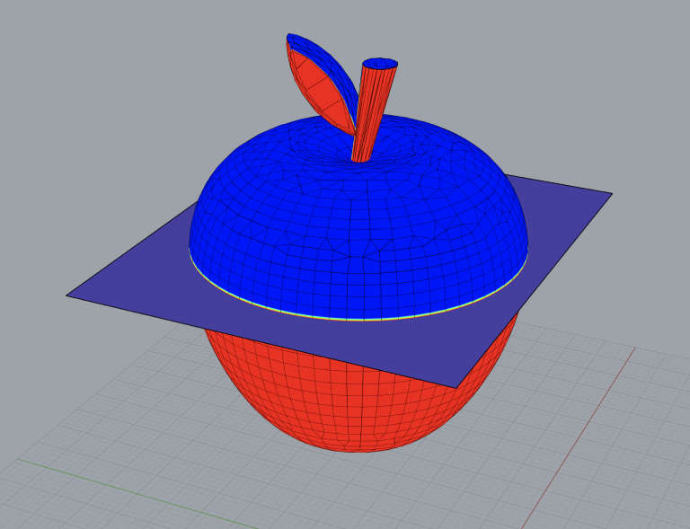
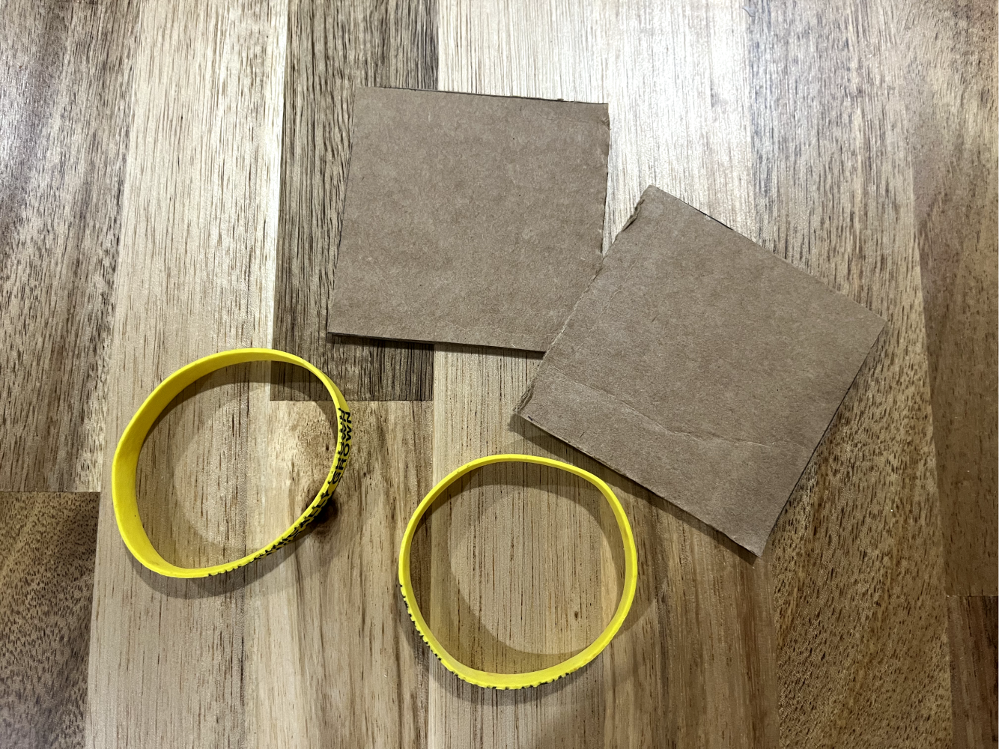

A6: Molding and casting
The final look of molds

Inspiration
For the molding and casting assignment, I found this cute apple model on Thingiverse and I thought it is a great
choice to start to practice making a mold.
Mesh work
The object I imported into Rhino is an open mesh. I reduced the polygons from 10232 to 4000 to make the mesh to be closed.
Angle
I used the command DraftAngleAnalysis and added the mid draft curve to view the balance of it. I made an open
extrusion to try to split the objects later.

Vents
I then added a main intake vent and a small vent using the truncated cones.
Registration points
I also added 4 registration points using the command Sphere.
Split work
I used the command MeshBooleanSplit to split the apple, vents, and registration points.
Add boxes
I flipped the bottom objects and added boxes for both two groups. I made a thicker bottom for
the box to avoid distortion of the later molds.
3D print the molds-for-molds
I printed with low quality settings and 10% infill to speed up the printing time. The result is
10% infill is not bad! I saved around 1 hour and the structure seems solid! The overall print time for two boxes is 7hours 45mins.
I was worried about letting the printer work it over night but it seems ok.
Oomoo mixing
Mixing the Oomoo is the easy part of the whole work. I didn't found any clear cups so I marked the
water line to ensure I have two equal amount of components. I then mixed them together throughtly around 4 mins.
Oomoo filling
I poured the mixed Oomoo into the boxes slowly while using cutlery to remove the small bubbles.
Release the molds
After 6 hours patient waiting, I can finally release the molds! It suprised me that the Oomoo is really
hard to release from the boxes. So I used Cricut scraper to slowly loose the edges. It totally takes me 10 mins to release all of them.
Where is my apple stem and leaf?!
I noticed my apple stem and leaf was still in the box, but hidden inside the box. It is no way to pull them out.
Even if I pull them out successfully, it is also impossible to cast the apple stem and leaf later. I realized that the hole fot the stem was
too thin to pull the leaf out. It is a great lesson to me.
Except for the stem and leaf, everything else is great. It has nicely detail. The registration points can fit
together perfectly.
Casting preparation
I used rubber bands with two cardboards to hold the two boxes together. I also added some color powder to make fun.

Hydrostone
I added water into hydrostone and mixed it thoroughly until it looked like yogurt. Then I poured
it slowly into the vent hole. The waiting time was around 30 - 50 mins.
Final look!

This week I finished it independently!
Resources:
Apple by Poh
Files:
Mold file 3DM
Return to home